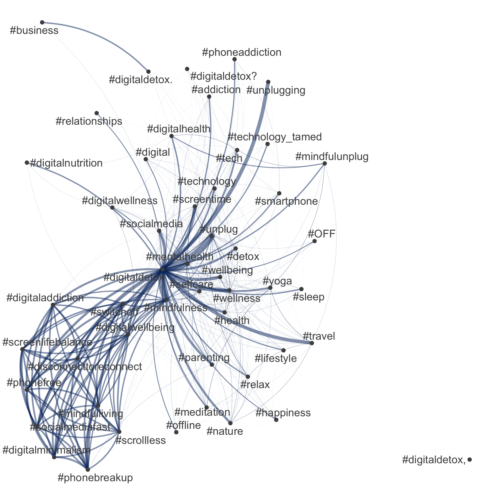
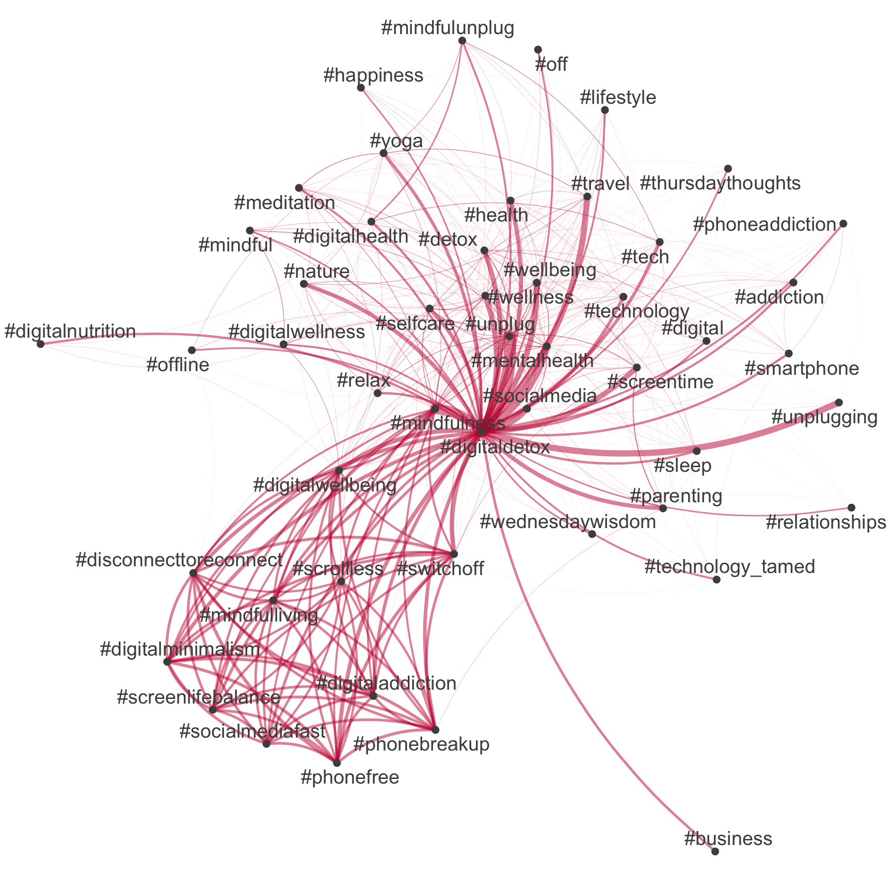

| Session | Datum | Topic | Presenter |
|---|---|---|---|
Introduction |
|||
1 |
25.10.2023 |
Kick-Off |
Christoph Adrian |
01.11.2023 |
üéÉ Holiday (No Lecture) |
||
2 |
08.11.2023 |
Einführung in DBD |
Christoph Adrian |
3 |
15.11.2023 |
üî® Working with R |
Christoph Adrian |
üó£Ô∏è |
Presentations |
||
4 |
22.11.2023 |
üìö Media routines & habits |
Group C |
5 |
29.11.2023 |
|
|
6 |
06.12.2023 |
üìö Digital disconnection |
Group A |
7 |
13.12.2023 |
üì¶ Data collection methods |
Group D |
8 |
|
üì¶ Automatic text analysis üé• |
Group B |
üéÑChristmas Break (No Lecture) |
|||
üìÇ Project |
Analysis of media content |
||
9 |
10.01.2024 |
üî® Text as data |
Christoph Adrian |
10 |
17.01.2024 |
üî® Automatic analysis of text in R |
Christoph Adrian |
11 |
24.01.2024 |
üî® Q&A |
Christoph Adrian |
12 |
31.01.2024 |
üìä Presentation & Discussion |
All groups |
13 |
07.02.2024 |
üèÅ Recap, Evaluation & Discussion |
Christoph Adrian |
üî® Automatic text analysis in R
Session 10
17.01.2024
print("Hello (again)!")
ü뮂Äçüíª Christoph Adrian
- PhD student @ Chair of Communication Science
- Text as Data & Social Media Usage (Effects)
- Conversational in R, Beginner in Python, SPSS & Stata
Schedule
Agenda
What we did so far
Analysis of tweets about digital disconnection on (not ùïè)
The tidy text format pipeline basics
Focus on single words and their relationship documents & sentiments


Silge & Robinson (2017)
Text as data in R
Part II: Document-Term-Matrices & Unsupervised Text Analysis (Topic Modeling)
Expansion of the pipeline
Focus on modeling the realtionships between words & documents

Silge & Robinson (2017)
Quick recap on Document-Term Matrix [DTM]
Most common structure for (classic) text mining
A matrix where:
each row represents one document (such as a tweet),
each column represents one term, and
each value (typically) contains the number of appearances of that term in that document.

Step-by-step DTM creation
Along the tidy text pipeline: Tokenize
# Common HTML entities
remove_reg <- "&|<|>"
# Create tidy data
tweets_tidy <- tweets_detox %>%
mutate(
text = str_remove_all(text, remove_reg)) %>%
tidytext::unnest_tokens("text", text) %>%
filter(!text %in% tidytext::stop_words$word)
# Preview
tweets_tidy %>%
select(tweet_id, user_name, text) %>%
print(n = 15)# A tibble: 639,459 × 3
tweet_id user_name text
<chr> <chr> <chr>
1 5777201122 Pete Blackshaw blackberry
2 5777201122 Pete Blackshaw iphone
3 5777201122 Pete Blackshaw read
4 5777201122 Pete Blackshaw pew
5 5777201122 Pete Blackshaw report
6 5777201122 Pete Blackshaw teens
7 5777201122 Pete Blackshaw distracted
8 5777201122 Pete Blackshaw driving
9 5777201122 Pete Blackshaw http
10 5777201122 Pete Blackshaw bit.ly
11 5777201122 Pete Blackshaw 4abr5p
12 5777201122 Pete Blackshaw digitaldetox
13 4814687834 Andrew Gerrard dawn_wylie
14 4814687834 Andrew Gerrard prompted
15 4814687834 Andrew Gerrard question
# ℹ 639,444 more rowsStep-by-step DTM creation
Along the tidy text pipeline: Tokenize ▶️ Summarize
# Common HTML entities
remove_reg <- "&|<|>"
# Create tidy data
tweets_tidy <- tweets_detox %>%
mutate(
text = str_remove_all(text, remove_reg)) %>%
tidytext::unnest_tokens("text", text) %>%
filter(!text %in% tidytext::stop_words$word)
# Create summarized data
tweets_summarized <- tweets_tidy %>%
count(tweet_id, text)
# Preview
tweets_summarized %>%
print(n = 15)# A tibble: 592,499 × 3
tweet_id text n
<chr> <chr> <int>
1 1000009901563838465 bite 1
2 1000009901563838465 detox 1
3 1000009901563838465 digital 1
4 1000009901563838465 digitaldetox 1
5 1000009901563838465 enjoy 2
6 1000009901563838465 fly 1
7 1000009901563838465 happitizer 1
8 1000009901563838465 happitizers 1
9 1000009901563838465 https 1
10 1000009901563838465 inspiration 1
11 1000009901563838465 mindgourmet 1
12 1000009901563838465 mindgourmet’s 1
13 1000009901563838465 sized 1
14 1000009901563838465 t.co 1
15 1000009901563838465 taste 1
# ℹ 592,484 more rowsStep-by-step DTM creation
Along the tidy text pipeline: Tokenize ▶️ Summarize ▶️ DTM
# Common HTML entities
remove_reg <- "&|<|>"
# Create tidy data
tweets_tidy <- tweets_detox %>%
mutate(
text = str_remove_all(text, remove_reg)) %>%
tidytext::unnest_tokens("text", text) %>%
filter(!text %in% tidytext::stop_words$word)
# Create summarized data
tweets_summarized <- tweets_tidy %>%
count(tweet_id, text)
# Create DTM
tweets_dtm <- tweets_summarized %>%
cast_dtm(tweet_id, text, n)
# Preview
tweets_dtm<<DocumentTermMatrix (documents: 46670, terms: 87172)>>
Non-/sparse entries: 592499/4067724741
Sparsity : 100%
Maximal term length: 49
Weighting : term frequency (tf)Choose or combine styles
Simple with tidytext, precise with quanteda
# Common HTML entities
remove_reg <- "&|<|>"
# Create tidy data
tweets_tidy <- tweets_detox %>%
mutate(
text = str_remove_all(text, remove_reg)) %>%
tidytext::unnest_tokens("text", text) %>%
filter(!text %in% tidytext::stop_words$word)
# Create summarized data
tweets_summarized <- tweets_tidy %>%
count(tweet_id, text)
# Create DTM
tweets_dtm <- tweets_summarized %>%
cast_dtm(tweet_id, text, n)
# Preview
tweets_dtm# Create corpus
quanteda_corpus <- tweets_detox %>%
quanteda::corpus(
docid_field = "tweet_id",
text_field = "text"
)
# Tokenize
quanteda_token <- quanteda_corpus %>%
quanteda::tokens(
remove_punct = TRUE,
remove_symbols = TRUE,
remove_numbers = TRUE,
remove_url = TRUE,
split_tags = FALSE # keep hashtags and mentions
) %>%
quanteda::tokens_tolower() %>%
quanteda::tokens_remove(
pattern = stopwords("en")
)
# Convert to Document-Feature-Matrix (DFM)
quanteda_dfm <- quanteda_token %>%
quanteda::dfm()An example: Network of hashtags
Comparison between tidytext & quanteda
# Extract hashtags
tweets_hashtags <- tweets_detox %>%
mutate(hashtags = str_extract_all(
text, "#\\S+")) %>%
unnest(hashtags)
# Extract most common hashtags
top50_hashtags_tidy <- tweets_hashtags %>%
count(hashtags, sort = TRUE) %>%
slice_head(n = 50) %>%
pull(hashtags)
# Visualize
tweets_hashtags %>%
count(tweet_id, hashtags, sort = TRUE) %>%
cast_dfm(tweet_id, hashtags, n) %>%
quanteda::fcm() %>%
quanteda::fcm_select(
pattern = top50_hashtags_tidy,
case_insensitive = FALSE
) %>%
quanteda.textplots::textplot_network(
edge_color = "#04316A"
)
An example: Network of hashtags
Comparison between tidytext & quanteda
# Extract DFM with only hashtags
quanteda_dfm_hashtags <- quanteda_dfm %>%
quanteda::dfm_select(pattern = "#*")
# Extract most common hashtags
top50_hashtags_quanteda <- quanteda_dfm_hashtags %>%
topfeatures(50) %>%
names()
# Construct feature-occurrence matrix of hashtags
quanteda_dfm_hashtags %>%
fcm() %>%
fcm_select(pattern = top50_hashtags_quanteda) %>%
textplot_network(
edge_color = "#C50F3C"
) 
An example: Network of hashtags
Comparison between tidytext & quanteda
A new input in the pipeline
Unsupervised learning example: Topic modeling

Silge & Robinson (2017)
Building a shared vocabulary … again
Important terms and definitions
Topic Modeling: Form of unsupervised machine learning method used to exploratively identify topics in a corpus. Often, these are so-called mixed-membership models.K: Number of topics to be calculated for a given a topic model.Word-Topic-Matrix: Matrix describing the conditional probability (beta) with which a feature is prevalent in a given topic.Document-Topic-Matrix: Matrix describing the conditional probability (gamma) with which a topic is prevalent in a given document.
Beyond LDA
Different topic modeling approaches
- Latent Dirichlet Allocation [
LDA] (Blei et al., 2003) is a probabilistic generative model that assumes each document in a corpus is a mix of topics and each word in the document is attributable to one of the document’s topics. - Structural Topic Modeling [
STM] (Roberts et al., 2016; Roberts et al., 2019) extends LDA by incorporating document-level covariates, allowing for the modeling of how external factors influence topic prevalence. - Word embeddings (
Word2Vec(Mikolov et al., 2013) ,Glove(Pennington et al., 2014)) represent words as continuous vectors in a high-dimensional space, capturing semantic relationships between words based on their context in the data. - Topic Modeling with Neural Networks (
BERTopic(Devlin et al., 2019),Doc2Vec(Le & Mikolov, 2014)) leverages deep learning architectures to automatically learn latent topics from textual data.
Preparation is everything
Suggested pre-processing steps (based on Maier et al. (2018))
- ⚠️ Deduplication;
- ✅ tokenization;
- ✅ transforming all characters to lowercase;
- ✅ removing punctuation and special characters;
- ✅ Removing stop-words;
- ⚠️ term unification (lemmatizing or stemming);
- üèóÔ∏è relative pruning (attributed to Zipf‚Äôs law);
How to find K
The most important question of model selection
- The choice of K (whether the model is instructed to identify 5, 15, or 100 topics), has a substantial impact on results:
- The smaller K, the more fine-grained and usually the more exclusive topics;
- the larger K, the more clearly topics identify individual events or issues.
- The stm package (Roberts et al., 2019) has two build in solution to find the optimal K
searchK()function- setting
K = 0when estimating the model
- Recommendation for
stm: (Manual) training and evaluation!
Train and evaluate topic models
Better than searchK(): Manual exploration
# Set up parallel processing using furrr
future::plan(future::multisession())
# Estimate multiple models
stm_exploration <- tibble(
k = seq(from = 5, to = 85, by = 5)
) %>%
mutate(
mdl = furrr::future_map(
k,
~stm::stm(
documents = quanteda_stm$documents,
vocab = quanteda_stm$vocab,
K = .,
seed = 42,
max.em.its = 1000,
init.type = "Spectral",
verbose = FALSE),
.options = furrr_options(seed = 42))
)[[1]]
A topic model with 5 topics, 46574 documents and a 8268 word dictionary.
[[2]]
A topic model with 10 topics, 46574 documents and a 8268 word dictionary.
[[3]]
A topic model with 15 topics, 46574 documents and a 8268 word dictionary.
[[4]]
A topic model with 20 topics, 46574 documents and a 8268 word dictionary.
[[5]]
A topic model with 25 topics, 46574 documents and a 8268 word dictionary.
[[6]]
A topic model with 30 topics, 46574 documents and a 8268 word dictionary.
[[7]]
A topic model with 35 topics, 46574 documents and a 8268 word dictionary.
[[8]]
A topic model with 40 topics, 46574 documents and a 8268 word dictionary.
[[9]]
A topic model with 45 topics, 46574 documents and a 8268 word dictionary.
[[10]]
A topic model with 50 topics, 46574 documents and a 8268 word dictionary.
[[11]]
A topic model with 55 topics, 46574 documents and a 8268 word dictionary.
[[12]]
A topic model with 60 topics, 46574 documents and a 8268 word dictionary.
[[13]]
A topic model with 65 topics, 46574 documents and a 8268 word dictionary.
[[14]]
A topic model with 70 topics, 46574 documents and a 8268 word dictionary.
[[15]]
A topic model with 75 topics, 46574 documents and a 8268 word dictionary.
[[16]]
A topic model with 80 topics, 46574 documents and a 8268 word dictionary.
[[17]]
A topic model with 85 topics, 46574 documents and a 8268 word dictionary.Semantic coherence as the key
Different model statistics for evaluation
Expand for full code
stm_results %>%
transmute(
k,
`Lower bound` = lbound,
Residuals = map_dbl(residual, "dispersion"),
`Semantic coherence` = map_dbl(semantic_coherence, mean),
`Held-out likelihood` = map_dbl(eval_heldout, "expected.heldout")) %>%
gather(Metric, Value, -k) %>%
ggplot(aes(k, Value, color = Metric)) +
geom_line(size = 1.5, alpha = 0.7, show.legend = FALSE) +
geom_point(size = 3) +
scale_x_continuous(breaks = seq(from = 5, to = 85, by = 5)) +
facet_wrap(~Metric, scales = "free_y") +
labs(x = "K (number of topics)",
y = NULL,
title = "Model diagnostics by number of topics"
) +
theme_pubr() +
# add highlights
geom_vline(aes(xintercept = 5), color = "#00BFC4", alpha = .5) +
geom_vline(aes(xintercept = 10), color = "#C77CFF", alpha = .5) +
geom_vline(aes(xintercept = 40), color = "#C77CFF", alpha = .5) Finding the best trade-off
Comparison of selected models based on exclusivty and semantic coherence
Expand for full code
# Models for comparison
models_for_comparison = c(5, 10, 40)
# Create figures
stm_results %>%
# Edit data
select(k, exclusivity, semantic_coherence) %>%
filter(k %in% models_for_comparison) %>%
unnest(cols = c(exclusivity, semantic_coherence)) %>%
mutate(k = as.factor(k)) %>%
# Build graph
ggplot(aes(semantic_coherence, exclusivity, color = k)) +
geom_point(size = 2, alpha = 0.7) +
labs(
x = "Semantic coherence",
y = "Exclusivity"
# title = "Comparing exclusivity and semantic coherence",
# subtitle = "Models with fewer topics have higher semantic coherence for more topics, but lower exclusivity"
) +
theme_pubr() A first overview
Understanding the ‘final’ model (k = 10)
A more detailed overview
Understanding the ‘final’ model (k = 10)
Expand for full code
# Create data
top_gamma <- tpm %>%
tidy(matrix = "gamma") %>%
dplyr::group_by(topic) %>%
dplyr::summarise(gamma = mean(gamma), .groups = "drop") %>%
dplyr::arrange(desc(gamma))
top_beta <- tpm %>%
tidytext::tidy(.) %>%
dplyr::group_by(topic) %>%
dplyr::arrange(-beta) %>%
dplyr::top_n(10, wt = beta) %>%
dplyr::select(topic, term) %>%
dplyr::summarise(terms_beta = toString(term), .groups = "drop")
top_topics_terms <- top_beta %>%
dplyr::left_join(top_gamma, by = "topic") %>%
dplyr::mutate(
topic = reorder(topic, gamma)
)
# Preview
top_topics_terms %>%
mutate(across(gamma, ~round(.,3))) %>%
dplyr::arrange(-gamma) %>%
gt() %>%
cols_label(
topic = "Topic",
terms_beta = "Top Terms (based on beta)",
gamma = "Gamma"
) %>%
gtExtras::gt_theme_538()| Topic | Top Terms (based on beta) | Gamma |
|---|---|---|
| 10 | phone, via, much, #screentime, know, check, people, phones, #parenting, online | 0.122 |
| 9 | help, read, devices, use, world, tech, family, taking, kids, sleep | 0.114 |
| 3 | need, great, week, going, listen, #unplugging, discuss, @icphenomenallyu, away, well | 0.111 |
| 2 | #unplug, just, weekend, #travel, unplug, enjoy, #nature, really, join, nature | 0.103 |
| 8 | new, technology, smartphone, retreat, work, addiction, year, health, internet, without | 0.099 |
| 7 | can, #mindfulness, feel, #switchoff, #digitalwellbeing, #wellness, things, #phonefree, #disconnecttoreconnect, #digitalminimalism | 0.098 |
| 4 | amp, day, take, #mentalhealth, go, try, #wellbeing, now, give, every | 0.092 |
| 1 | social, media, get, life, back, like, good, #socialmedia, find, see | 0.091 |
| 5 | us, today, days, next, put, happy, may, facebook, share, hour | 0.089 |
| 6 | one, break, tips, make, screen, love, #technology, free, looking, getting | 0.080 |
Results in a different context
Merge back with original data for further analysis and comparison
Expand for full code
top_gamma %>%
ggplot(aes(as.factor(topic), gamma)) +
geom_col(fill = "#F57350") +
labs(
x = "Topic",
y = "Mean gamma"
) +
coord_flip() +
scale_y_reverse() +
scale_x_discrete(position = "top") +
theme_pubr()
tweets_detox_topics %>%
mutate(across(top_topic, as.factor)) %>%
ggplot(aes(top_topic)) +
geom_bar(fill = "#1DA1F2") +
labs(
x = "",
y = "Number of tweets"
) +
coord_flip() +
theme_pubr()Most representative tweets for Topic 10
Check interpretability and relevance of topics
Expand for full code
| tweet_id | user_username | created_at | text | top_gamma |
|---|---|---|---|---|
| 1496707135794827266 | beckygrantstr | 2022-02-24 04:42:43 | Do you have a blind spot when it comes to what your kids are doing online? #screentime #parenting #digitaldetox Parents Have a Blind Spot When it Comes to Kids and Screens | by Becky Grant | A Parent Is Born | Feb, 2022 | Medium - via @pensignal https://t.co/EcV7yKn4WX | 0.8192142 |
| 1496343978672898048 | beckygrantstr | 2022-02-23 04:39:39 | Do you have a blind spot when it comes to what your kids are doing online? #screentime #parenting #digitaldetox Parents Have a Blind Spot When it Comes to Kids and Screens | by Becky Grant | A Parent Is Born | Feb, 2022 | Medium - via @pensignal https://t.co/o9e6WQIpm5 | 0.8192142 |
| 1495981434665947137 | beckygrantstr | 2022-02-22 04:39:02 | Do you have a blind spot when it comes to what your kids are doing online? #screentime #parenting #digitaldetox Parents Have a Blind Spot When it Comes to Kids and Screens | by Becky Grant | A Parent Is Born | Feb, 2022 | Medium - via @pensignal https://t.co/rQgcPltrMt | 0.8192142 |
| 1499612427503247360 | beckygrantstr | 2022-03-04 05:07:18 | Do you have a blind spot when it comes to what your kids are doing online? #screentime #parenting #digitaldetox Parents Have a Blind Spot When it Comes to Kids and Screens | by Becky Grant | A Parent Is Born | Feb, 2022 | Medium - via @pensignal https://t.co/DQRQlN1iyq | 0.8192142 |
| 1499249315381977089 | beckygrantstr | 2022-03-03 05:04:26 | Do you have a blind spot when it comes to what your kids are doing online? #screentime #parenting #digitaldetox Parents Have a Blind Spot When it Comes to Kids and Screens | by Becky Grant | A Parent Is Born | Feb, 2022 | Medium - via @pensignal https://t.co/L7ly66J2fq | 0.8192142 |
| 1498886117394980865 | beckygrantstr | 2022-03-02 05:01:13 | Do you have a blind spot when it comes to what your kids are doing online? #screentime #parenting #digitaldetox Parents Have a Blind Spot When it Comes to Kids and Screens | by Becky Grant | A Parent Is Born | Feb, 2022 | Medium - via @pensignal https://t.co/uJPIMYY1Id | 0.8192142 |
| 1498522796611321864 | beckygrantstr | 2022-03-01 04:57:30 | Do you have a blind spot when it comes to what your kids are doing online? #screentime #parenting #digitaldetox Parents Have a Blind Spot When it Comes to Kids and Screens | by Becky Grant | A Parent Is Born | Feb, 2022 | Medium - via @pensignal https://t.co/z4Fv2bmeag | 0.8192142 |
| 1498159674008510465 | beckygrantstr | 2022-02-28 04:54:35 | Do you have a blind spot when it comes to what your kids are doing online? #screentime #parenting #digitaldetox Parents Have a Blind Spot When it Comes to Kids and Screens | by Becky Grant | A Parent Is Born | Feb, 2022 | Medium - via @pensignal https://t.co/SdZFAJy6kZ | 0.8192142 |
| 1497796525929472003 | beckygrantstr | 2022-02-27 04:51:34 | Do you have a blind spot when it comes to what your kids are doing online? #screentime #parenting #digitaldetox Parents Have a Blind Spot When it Comes to Kids and Screens | by Becky Grant | A Parent Is Born | Feb, 2022 | Medium - via @pensignal https://t.co/OKLMzwfQUA | 0.8192142 |
| 1497433419512524802 | beckygrantstr | 2022-02-26 04:48:42 | Do you have a blind spot when it comes to what your kids are doing online? #screentime #parenting #digitaldetox Parents Have a Blind Spot When it Comes to Kids and Screens | by Becky Grant | A Parent Is Born | Feb, 2022 | Medium - via @pensignal https://t.co/yTnqhTPV8h | 0.8192142 |
Users with most tweets about Topic 10
Check interpretability and relevance of topics
| user_username | n | prop |
|---|---|---|
| TimeToLogOff | 2384 | 28.83 |
| punkt | 390 | 4.72 |
| petitstvincent | 175 | 2.12 |
| tanyagoodin | 135 | 1.63 |
| ditox_unplug | 111 | 1.34 |
| OurHourOff | 99 | 1.20 |
| beckygrantstr | 63 | 0.76 |
| CreeEscape | 56 | 0.68 |
| ConsciDigital | 51 | 0.62 |
| phubboo | 50 | 0.60 |
Validate, validate, validate!
Things to remember about topic models
topic models are a useful tool for automated content analysis, both when exploring a large amount of data and when it comes to systematically identifying relationships between topics and other variables
certain prerequisites such as minimum size and variety of the corpus (namely on the level of words and documents and their relation to each other) need to be met for a conclusive model
everything above a certain degree of word frequencies is considered a “topic,” even if it is not a topic in human interpretation
Reading the tea leaves (Chang et al., 2009) or (again): validate, validate, validate (e.g. with
oolongpackage (Chan & Sältzer, 2020))
üìã Hands on working with R
Various exercises on the content of today’s session
üß™ And now ‚Ķ you: Model away!
Objective of this exercise
- Brief review of the contents of the last session
- Teaching the basic steps for creating and analyzing document feature matrices and stm topic models
Next steps
- Download files provided on StudOn or shared drives for the sessions
Unzipthe archive at a destination of your choice.- Double click on the
Exercise-Automatic_text_analysis.Rprojto open the RStudio project. This ensures that all dependencies are working correctly. - Open the
exercise.qmdfile and follow the instructions. - Tip: You can find all code chunks used in the slides in the showcase.qmd (for the raw code) or showcase.html (with rendered outputs).
Time for questions
Thank you!
References
Barrie, C., & Ho, J. (2021). academictwitteR: An r package to access the twitter academic research product track v2 API endpoint. Journal of Open Source Software, 6(62), 3272. https://doi.org/10.21105/joss.03272
Blei, D. M., Ng, A. Y., & Jordan, M. I. (2003). Latent dirichlet allocation. The Journal of Machine Learning Research, 3, 9931022.
Chan, C., & Sältzer, M. (2020). Oolong: An r package for validating automated content analysis tools. Journal of Open Source Software, 5(55), 2461. https://doi.org/10.21105/joss.02461
Chang, J., Boyd-Graber, J., Gerrish, S., Wang, C., & Blei, D. (2009). Reading tea leaves: How humans interpret topic models. 32, 288–296.
Devlin, J., Chang, M.-W., Lee, K., & Toutanova, K. (2019). BERT: Pre-training of deep bidirectional transformers for language understanding (J. Burstein, C. Doran, & T. Solorio, Eds.; p. 41714186). Association for Computational Linguistics. https://doi.org/10.18653/v1/N19-1423
Le, Q., & Mikolov, T. (2014). Distributed representations of sentences and documents (E. P. Xing & T. Jebara, Eds.; Vol. 32, p. 11881196). PMLR. https://proceedings.mlr.press/v32/le14.html
Maier, D., Waldherr, A., Miltner, P., Wiedemann, G., Niekler, A., Keinert, A., Pfetsch, B., Heyer, G., Reber, U., Häussler, T., Schmid-Petri, H., & Adam, S. (2018). Applying LDA Topic Modeling in Communication Research: Toward a Valid and Reliable Methodology. Communication Methods and Measures, 12(2-3), 93–118. https://doi.org/10.1080/19312458.2018.1430754
Mikolov, T., Sutskever, I., Chen, K., Corrado, G. S., & Dean, J. (2013). Distributed representations of words and phrases and their compositionality (C. J. Burges, L. Bottou, M. Welling, Z. Ghahramani, & K. Q. Weinberger, Eds.; Vol. 26). Curran Associates, Inc. https://proceedings.neurips.cc/paper_files/paper/2013/file/9aa42b31882ec039965f3c4923ce901b-Paper.pdf
Pennington, J., Socher, R., & Manning, C. D. (2014). Glove: Global vectors for word representation. 15321543. https://doi.org/10.3115/v1/D14-1162
Roberts, M. E., Stewart, B. M., & Airoldi, E. M. (2016). A model of text for experimentation in the social sciences. Journal of the American Statistical Association, 111(515), 988–1003. https://doi.org/f88tzh
Roberts, M. E., Stewart, B. M., & Tingley, D. (2019). stm: An R Package for Structural Topic Models. Journal of Statistical Software, 91(1), 1–40. https://doi.org/10.18637/jss.v091.i02
Silge, J., & Robinson, D. (2017). Text mining with r: A tidy approach (First edition). O’Reilly.
Zheng, A., & Casari, A. (2018). Feature engineering for machine learning: Principles and techniques for data scientists (First edition). O’Reilly.

Social Media as üíä, üëπ or üç© ?
Discussion about digital disconnection on twitter
Increasing trend towards more conscious use of digital media (devices), including (deliberate) non-use with the aim to restore or improve psychological well-being (among other factors)
Collect all tweets (until 31.12.2022) via Twitter Academic Research Product Track v2 API &
academictwitteRpackage (Barrie & Ho, 2021) that mention or discuss digital detox (and similar terms)Dataset for session is a subsample (n = 46670) with only tweets that contain
#digitaldetox.